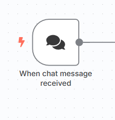
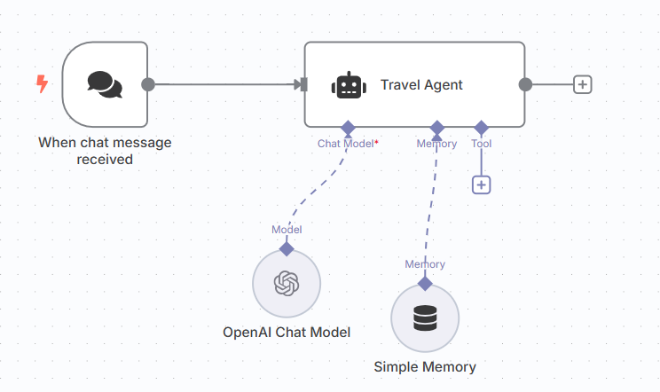
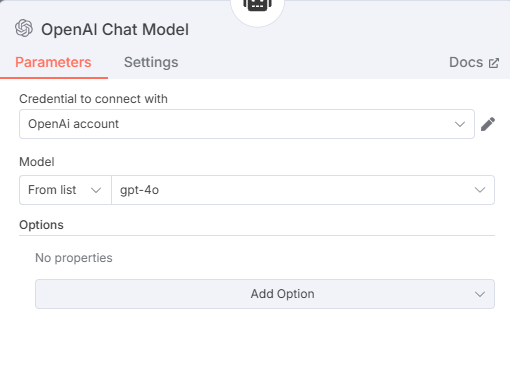
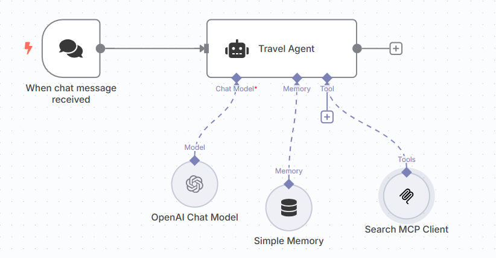
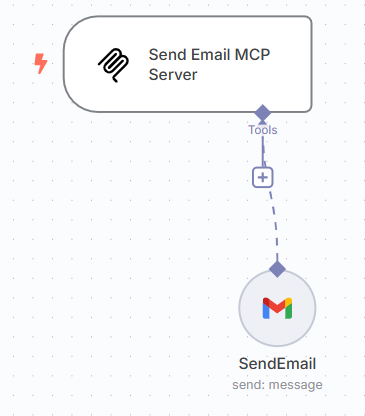
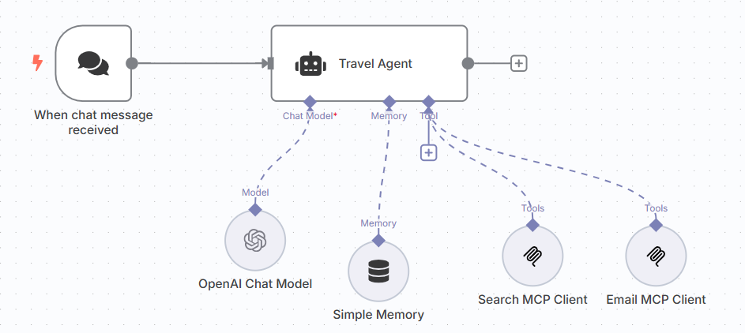
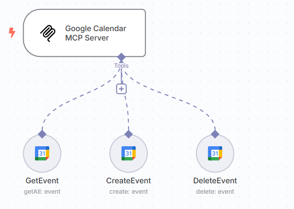

Fully Functional Agent Loop - The Travel Agent
🔀 Workflow: Travel Agent
Build a Fully Functional ReAct Travel Agent with MCP using n8n

This workflow was built using n8n, a no-code/low-code automation tool that allows you to visually connect agents, tools, and APIs.
Here’s how it works:
- The agent receives a natural language input from the user (e.g., planning a trip)
- It uses reasoning steps to identify missing information or clarify ambiguous ones
- Then, it plans which tools to use and in what sequence (e.g., flight search → hotel search → itinerary planning)
- It accesses those tools using structured queries (inspired by MCP principles)
- Finally, it assembles a summary and sends it to the user via email and adds the trip to their calendar
Step-by-Step: Travel Agent Workflow
We’ll break down the entire workflow node-by-node.
Step 1: User Input Trigger
The flow begins with a user request (triggered via webhook or form).
- Text input example: “Plan a 5-day trip to Paris next month”
- The message is passed into the system via n8n's chat trigger

User Input Node
Step 2: Setup the Agent to parse user data
This is where we set up our ****AI agent inside n8n.
The user input is passed into an LLM node powered by the OpenAI API (you can use models like gpt-3.5-turbo or gpt-4). We also attach a simple memory block to help the agent retain short-term context across the workflow.
The system prompt includes structured instructions that guide the agent to:
- Extract structured fields like destination, travel dates, and duration
- Reformat the data into a format suitable for downstream tools
This step is focused purely on interpretation and memory retention — not yet tool interaction. It's a clean example of how to go from messy natural input to structured, actionable intent using LLMs and memory.

Agent node connected to user input

To setup OpenAI chat node, ensure the credentials are added and the right model is selected

For the simple memory, it is essential to pass the sessionId and also provide the required context window
Step 3: Search MCP Server & Client setup
This is where the agent begins executing search tasks using the Search MCP, which includes three tools:
- Search Flights
- Search Hotels
- Search Activities
These tools use SerpAPI under the hood to access Google search results and return structured data based on parameters passed from the agent.
The flow:
- Agent sends search request to the MCP Server
- Server routes to the correct tool (flights, hotels, or activities)
- Results are returned to the agent via the MCP Client
This design decouples tool logic from the agent, allowing flexible, standardized integration.

Search MCP server and its tools

Search MCP Client to connect to Search MCP Server
In order to connect an MCP Server to an MCP Client, use the SSE endpoint in Server and add it to the MCP Client node.
Step 4: Email MCP Server & Client setup
Next, we use the Email MCP, which includes a single tool:
- SendEmail
The user’s email address is collected in the earlier interaction. This tool takes the finalized travel plan and sends it directly to the user’s inbox as a neatly formatted message.
The MCP server accepts structured trip data, formats it, and handles the outbound email through a provider (like SendGrid or Gmail API).

Email MCP Server

Email MCP Client, added to the agent
Step 5: Calendar MCP Server & Client setup
The Calendar MCP allows the agent to manage user calendar events with three tools:
- GetEvent
- CreateEvent
- DeleteEvent
Here’s what it does:
- Checks for conflicts during the travel dates
- Adds trip events (flights, check-ins, tours) once finalized
- Deletes/replaces events if the user changes travel plans
This makes the agent not just an advisor but an active participant in the user’s schedule.

Calendar MCP Server
Step 6: Final Output
Now comes the moment where everything comes together.
I told the agent I wanted to take a trip from Karachi to Paris. I provided it the dates and some activities I would prefer to do while in Paris.
The agent collects the flight options, hotel recommendations, and planned itinerary. It not only stitches the information into a cohesive summary but also packages it in a way that feels polished and ready to use.
The travel plan is sent via email to the me — giving a clean, organized view of their trip including flights, hotels, and activities. It can also be routed to chat platforms or webhooks for further integration.

Why This Matters
This travel agent isn't a toy — it's a deployable, modular, and extensible system. You can:
Swap in real APIs
Add more search tools (visa requirements, currency conversion, weather)
Extend output formats (PDFs, rich chat cards)
It’s a perfect example of tool-augmented agentic reasoning that doesn’t require full-stack development.
🎉 That’s a Wrap!
Over the past seven days, we’ve gone from foundational theory to a fully functioning system, not just imagining what agents could do, but actually building one that reasons, retrieves, and takes action. Along the way, you’ve seen the building blocks of modern intelligence: memory, planning, tools, collaboration, and real-world execution. But this isn’t just about travel agents or workflows — it’s about unlocking a new way of thinking.
What happens when intelligence becomes modular?
When reasoning becomes a service?
The future of AI isn’t just smarter models — it’s systems that work together, adapt, and solve. You now know how to build them.
Don’t forget to check out our Agentic AI System Design for PMs course on Maven if you are interested to be a part of something bigger.